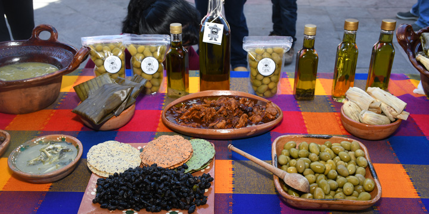
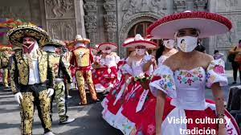
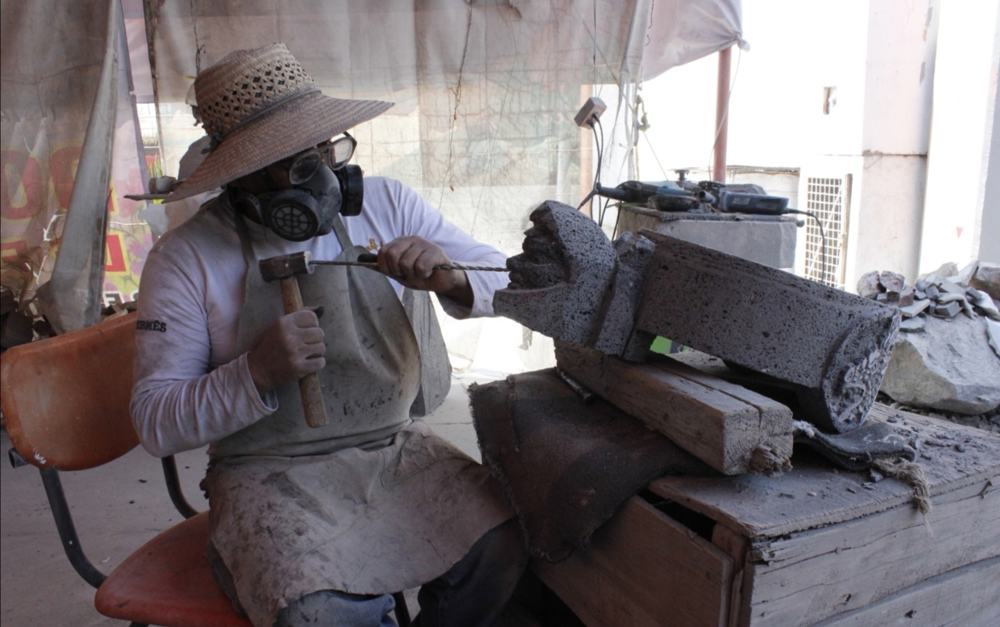

Chimalhuacán fue fundado en 1259 por tres jefes hermanos llamados Huauxomatl, Chalchiutlatonac y Tlatzcantecuhtli. Los jefes o tlatoani y su gente eran originarios de Tula, otra parte de la población era del pueblo de Culhuacán. Hablaban las lenguas chichimeca y mexicana por ser descendientes de acolhuas y mexicanos; con el tiempo prevaleció la lengua náhuatl o mexicana y las costumbres se unificaron.
Chimalhuacán se funda como señorío, con todas sus características. Fue uno de los señoríos de Texcoco y por ello perteneciente a la Triple Alianza México, Texcoco y Tlacopan, a partir de 1431. Cabe recordar que estos pueblos dominaban lo que actualmente constituye el territorio mexicano.
Como sucesos relevantes de esta época se tiene que previo a la coronación de Nezahualcóyotl como Rey de Texcoco, provenientes de México, las tropas integrantes de la Triple Alianza, Nezahualcóyotl se dirigió a Texcoco acompañado de los jefes de Tenochtitlán, pasaron por lo que fuera la llanura de Santa Martha y cuando llegaron a Chimalhuacán decretó una amnistía para todos los pueblos que siendo de Texcoco pelearon en su contra y a favor de los tepanecas, siendo el caso de los de Huexotla; Itzcóatl ofreció el perdón a cambio de que se rindieran de lo contrario entrarían las tropas aliadas a sangre y fuego contra su ciudad, los de Huexotla no aceptaron la propuesta y salieron formados en orden de batalla, poco duró el combate porque Moctezuma hizo prisionero a su señor y las tropas huyeron para después pedir perdón. Finalmente Nezahualcóyotl fue aclamado Rey de Texcoco.
Los platillos más representativos de la región son los que se catalogan como excepcionales dado que provienen de la época en que Chimalhuacán se alimentaba del Lago de Texcoco, pues se contaba con parvadas de aves que emigraban, así como con variados y sabrosos productos provenientes del agua. Esta tradición se mantiene viva gracias al arraigo y a la tradición del pueblo, quien se provee de lo necesario en otras zonas lacustres para así poder preparar el "ahuautle", la tenaca envuelta, el "mixmole" de pescado o de acocil. El tamal de carpa, de pescaditos amarillos, de juil o tortilla de pescado llamada también "Santos" o "Ahuahuantos". Otro platillo muy delicado por su sabor lo constituye el pato silvestre que se prepara de varias formas: barbacoa, caldillo o al lodo.
En el barrio de Xochiaca se dan las aceitunas que se distribuyen en la región y son acompañantes de algunos platillos.
El municipio se identifica por las fiestas de carnaval que se celebran previamente a la cuaresma y datan de la segunda mitad del siglo XIX.
Los productos ornamentales hechos de piedra constituyen un atractivo para todos aquellos que quieran tener desde un molcajete con el diseño y labrado que gusten, ceniceros, bases de mesa, gárgolas, dinteles, columnas, capiteles, hasta fuentes, imágenes, monumentos, lápidas, mausoleos, esculturas y todo aquello que sólo queda limitado por su imaginación.
